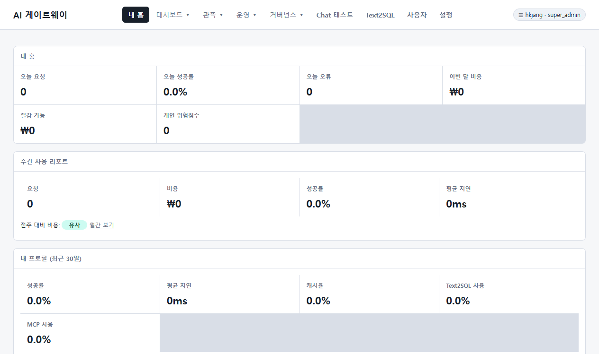

기업형 AI 코딩 프록시 게이트웨이
vibe-coders
Roo Code, Cursor, Continue 및 OpenAI SDK 요청을 초저지연 SSE로 중계하면서
실시간 원화(KRW) 비용·토큰 추적, 시크릿 방화벽 보안 거버넌스, Datadog 수준의 LLM Observability 및 통합 MCP Gateway를 단일 오프라인 패키지로 제공합니다.
왜 기업은 vibe-coders를 선택해야 하는가?
개발 생산성을 극대화하는 AI 개발 도구 도입, 하지만 비용 폭주와 소스코드 시크릿 유출 리스크는 기업의 거버넌스 과제입니다.
-
❌
비용 통제 불가: 개발자별 AI 사용량 및 원화(KRW) 토큰 비용 추적 불가
-
❌
민감 정보 유출: 소스코드 내 API 키, 시크릿, 개인정보가 외부 LLM으로 무단 전송
-
❌
품질 & 파편화: 프롬프트 버전 관리 부재 및 LLM 지연/오류 원인 파악 불가능
-
❌
MCP 서버 파편화: 여러 MCP 도구 서버를 개별 관리하며 도구 승인 통제 불가
-
✅
실시간 KRW 쿼터 제어: 사용자/팀/IP별 일별·월별 쿼터 한도 초과 시 자동 429 차단
-
✅
Secret Firewall 거버넌스: 실시간 시크릿 마스킹, 승인 워크플로우 및 감사 로그
-
✅
Datadog급 LLM 관측: Trace/Session 탐색 및 프롬프트 버전별 지연·오류·비용 모달 비교
-
✅
단일 `/mcp` Gateway: 업스트림 MCP 통합 집약, 도구 네임스페이스, 차단 정책 적용
엔터프라이즈를 위한 4대 핵심 기능
초저지연 SSE 중계부터 Datadog 수준의 프롬프트 관측, 시크릿 보안, MCP 집약까지 단 하나의 프록시 게이트웨이로 완벽 해결합니다.
초저지연 SSE Streaming Instant Flush
Roo Code, Cursor, Continue, OpenAI Python/TS SDK 요청을 중간에서 가로채 실시간 중계합니다.
• stream=true 첫 번째 청크부터 지연 없이 즉시 프런트엔드로 Flush
• 프록시 오버헤드 5ms 미만으로 개발자 응답 체감 속도 극대화
• DB 장애 시 안전한 NDJSON 비동기 롤링 감사 로그 Fallback 지원
{
"openAI.apiBase": "http://vibe-gateway.company.local:8080/v1",
"openAI.apiKey": "vbe_live_enterprise_key_98a7",
"model": "gpt-4o"
}Secret Firewall & 실시간 쿼터 제어
기업의 중요한 시크릿 유출을 원천 차단하고 예산 초과를 방지합니다.
• Secret Firewall: AWS Key, DB Password, Private Token 실시간 차단 & 마스킹
• 원화(KRW) 쿼터: 사용자 / 팀 / IP별 일별·월별 원화 예산 한도 설정
• 보존 정책: 24시간~90일 맞춤형 프롬프트 마스킹 보존 및 자동 Cleanup
🔒 Security & Quota Flow
Datadog 수준의 LLM Observability & Prompt Compare
프롬프트 성능과 비용을 엔지니어링 관점에서 정밀하게 모니터링합니다.
• Trace/Span Explorer: LLM 요청 단건 수명주기, 첫 청크 지연시간, 응답 토큰 추적
• Prompt Version Compare: 프롬프트 버전별 평균 지연, 비용, 오류율, 평가 실패율 모달 비교
• Human Alignment & Feedback: 개발자 인라인 평가 및 자동 Insight 분석

단일 `/mcp` 통합 게이트웨이
분산된 업스트림 MCP(Model Context Protocol) 서버를 단 하나의 엔드포인트로 집약합니다.
• JSON-RPC 2.0 지원: 단일 /mcp 엔드포인트로 다중 MCP 라우팅
• 도구 네임스페이스: <upstream>__<tool> 충돌 없는 자동 접두사 부여
• MCP Policy: 허용/차단 정책(Allowlist), 사용자 귀속 관측 통합
{
"jsonrpc": "2.0",
"method": "tools/call",
"params": {
"name": "github__create_pull_request",
"arguments": { "title": "feat: add proxy" }
},
"id": 1
}우리 조직의 AI 비용 및 절감액 시뮬레이션
개발자 수와 일일 AI 프롬프트 사용량을 조절하여 예상 비용 및 vibe-coders 도입 시 절감 효과를 확인하세요.
신뢰할 수 있는 제로 트러스트 아키텍처
개발도구와 외부 LLM 공급자 사이에 위치하여 보안 검증, 쿼터 제어, 감사 로그를 투명하게 수행합니다.
👨💻 Client Layer
VS Code / Cursor
Roo Code / Continue
OpenAI SDK / Python
🛡️ vibe-coders Gateway
• Ultra-low SSE Streaming Proxy
• Secret Firewall & KRW Quota
• SQLite / Postgres Audit Store
• Datadog-level LLM Observability
☁️ Upstream Models & MCP
OpenAI / Anthropic
Local vLLM / Ollama
Enterprise MCP Servers
자주 묻는 질문 (FAQ)
vibe-coders 도입 및 연동에 대한 궁금한 사항을 확인하세요.
OpenAI API 규격을 지원하는 Roo Code, Cline, Cursor, Continue 및 공식 OpenAI Python/TypeScript SDK 등 모든 개발 환경과 100% 호환됩니다. 기존 설정에서 API Base URL만 vibe-coders 게이트웨이 주소(예: http://localhost:8080/v1)로 변경하면 바로 적용됩니다.
네, 오프라인 폐쇄망 환경을 위해 사전 빌드된 Docker 이미지 패키지와 바이너리 릴리즈를 제공합니다. 외부 패키지 다운로드 없이 docker compose up -d 명령으로 즉시 가동할 수 있으며, 내장 SQLite 또는 사내 PostgreSQL DB와 연동할 수 있습니다.
관리자는 어드민 UI에서 사용자, 팀, IP, API 키 단위로 일별/월별 원화(KRW) 한도 및 토큰 쿼터를 설정할 수 있습니다. 쿼터가 초과되면 게이트웨이가 429 Too Many Requests 응답과 Retry-After 헤더를 반환하여 불필요한 과금을 즉시 차단합니다.
다중 업스트림 MCP(Model Context Protocol) 서버를 단일 /mcp (JSON-RPC 2.0) 엔드포인트로 집약합니다. 도구 이름에 <upstream>__<tool> 형태의 네임스페이스를 자동 부여하여 도구 충돌을 방지하고, 허용 목록(Allowlist) 정책을 통합 관리합니다.
Trace/Span Explorer, Session Explorer, Prompt Version Compare 모달을 포함합니다. 프롬프트 버전별로 평균 지연 시간, 비용(KRW), 오류율, 평가 실패율을 정밀 비교 분석하여 최적의 프롬프트 버전 선택을 지원합니다.